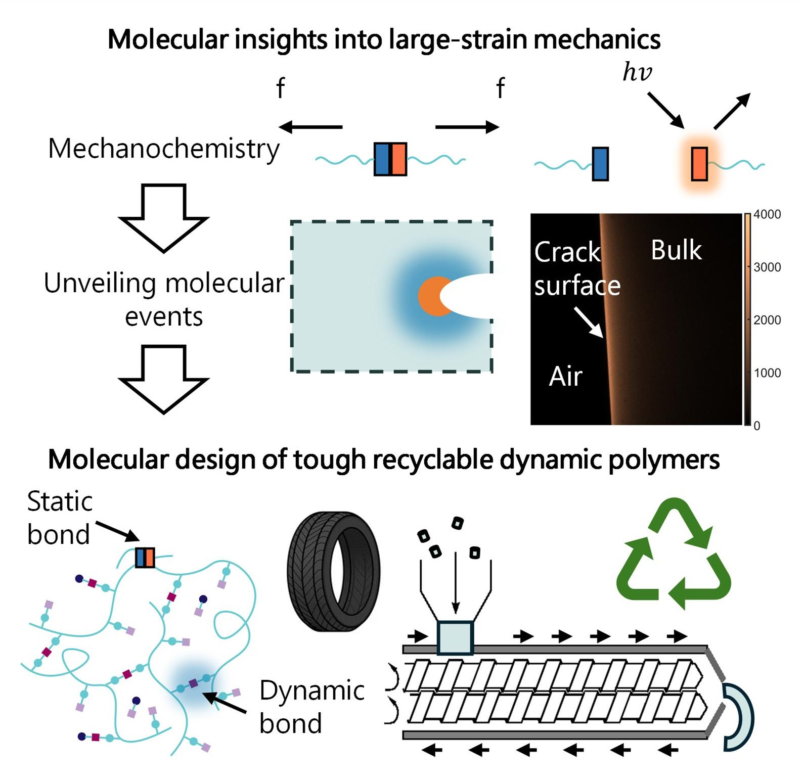

From Bonds to Bulk
Our research aims to unveil the molecular origins of large-strain behavior in dynamic polymers to enable tough, healable, and recyclable materials.
From natural polymers such as DNA and proteins to synthetic entangled thermoplastics and other emerging materials that enable modern technology, dynamic polymers hold the key to sustainable and transformative materials. Yet, their large-strain behavior (i.e., fracture and flow), most critical to their performance and recycling, remains poorly understood. Under large strains, polymer chains reach their limiting extensibilities, concentrate stress, cleave to dissipate energy and redistribute stress to neighboring chains. Dynamic bonds open new molecular pathways for stress delocalization and energy dissipation, and elucidating their role is key to designing tough, healable, recyclable materials. By coupling damage-activated chemistry with dynamic material design, we will engineer polymers that exhibit exceptional toughness in use and flow suitable for recycling in end- of-life.
We combine (i) dynamic chemistries (covalent and non-covalent) with (ii) polymer mechanochemistry to visualize molecular damage and understand how dynamic bonds redistribute stress, dissipate energy, and prevent catastrophic failure. By uncovering these structure–property relationships, we seek to establish molecular design principles for materials that are simultaneously tough in service, healable after damage, and recyclable at end-of-life.